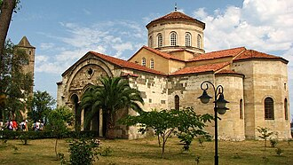

تقديم
L'église byzantine Sainte-Sophie de Trébizonde, aujourd'hui convertie en musée, est particulièrement remarquable pour ses chapiteaux. Cette église fut construite pendant le règne de Manuel Ier de Trébizonde (1238-1263).
آيا صوفيا هي كنيسة يونانية أرثوذكسية سابقة تم تحويلها إلى مسجد في عام 1584، وتقع في مدينة طرابزون، في الجزء الشمالي الشرقي من تركيا. جرى تحويل المبنى إلى متحف عام 1964، وعاد إلى عمله كمسجد عام 2013. يعود تاريخ المبنى إلى القرن الثالث عشر عندما كانت طرابزون عاصمة إمبراطورية طرابزون الإغريقية. وتقع بالقرب من شاطئ البحر وعلى بعد ميلين غرب حدود المدينة التي تعود للقرون الوسطى. وهي واحدة من بضع عشرات من المواقع البيزنطية الموجودة في المنطقة. وقد وصفت بأنها «تعتبر واحدة من أفضل الأمثلة على العمارة البيزنطية».
Hagia Sophia is a formerly Greek Orthodox church that was converted into a mosque following the conquest of Trabzon by Mehmed II in 1461. It is located in Trabzon, northeastern Turkey. It was converted into a museum in 1964 and back into a mosque in 2013. The building dates back to the thirteenth century, when Trabzon was the capital of the Empire of Trebizond. It is located near the seashore and two miles west of the medieval town's limits. It is one of a few dozen Byzantine sites extant in the area and has been described as being "one of the finest examples of Byzantine architecture".
Ayasofya ya da eskiden Ayasofya Kilisesi, Trabzon'un Fatih Mahallesi'nde bulunan kiliseden çevrilmiş bir camidir.
آیا صوفیا ایک سابقہ یونانی آرتھوڈوکس گرجا ہے جسے 1584ء میں مسجد میں تبدیل کیا گیا۔ یہ ترکی کے شمال مشرقی حصے میں واقع شہر طرابزون میں موجود ہے۔ 1964ء میں اس عمارت کو میوزیم میں تبدیل کیا گیا اور 2013ء میں دوبارہ مسجد کے طور پر استعمال شروع ہوا۔
Die Hagia Sophia ist eine große, ehemalige byzantinische Klosterkirche in Trabzon im Nordosten der Türkei am Schwarzen Meer. Die Kreuzkuppelkirche wurde im 13. Jahrhundert errichtet, als Trapezunt die Hauptstadt des gleichnamigen Kaiserreichs war, während der osmanischen Herrschaft im 16. Jahrhundert in eine Moschee umgewandelt und mit Unterbrechungen bis in die 1950er Jahre in dieser Funktion verwendet. Nach der Restaurierung der erhaltenen Fresken, die unter einem weiß gestrichenen Wandputz freigelegt wurden, war das bedeutendste Baudenkmal der Stadt seit 1964 als Museum zugänglich. Nach einer umstrittenen Gerichtsentscheidung von 2012 wurde die Hagia Sophia wieder in eine Moschee umgewandelt. Im Juli 2013 fand das erste Freitagsgebet statt.
La iglesia de Santa Sofía, ahora Museo de Santa Sofía, es una antigua iglesia greco-ortodoxa ubicada en la ciudad de Trebisonda, en el noreste de Turquía. Su origen se remonta al siglo XIII, cuando Trebisonda fue la capital del Imperio de Trebisonda. Se encuentra cerca de la costa y a 2 kilómetros al oeste de los límites de la ciudad medieval. Es uno de los pocos sitios bizantinos todavía existentes en la zona.
La Moschea di Santa Sofia è una ex chiesa greco-ortodossa situata a Trebisonda, in Turchia. È una delle poche decine di siti bizantini ancora esistenti nella zona. Si trova vicino alle rive del Mar Nero. È stata descritta come "uno dei migliori esempi di architettura bizantina".
Santa Sofia é uma antiga igreja ortodoxa bizantina na cidade de Trebizonda, no nordeste da Turquia. Foi convertida em mesquita na sequência da conquista da cidade em 1461 pelo sultão otomano Maomé II, o Conquistador.
De Hagia Sophia of Aya Sophia is een voormalige kerk en museum en sinds 2020 een moskee. De grootste bezienswaardigheid van Trabzon ligt enigszins buiten het centrum van de stad en betreft een van de weinige Byzantijnse monumenten in de regio dat de geschiedenis heeft weten te overleven. Het voormalige kerkgebouw gaat terug naar de 13e eeuw toen de stad Trabzon de hoofdstad was van het Grieks-Byzantijnse Keizerrijk Trebizonde en wordt omschreven als een van de mooiste voorbeelden van Byzantijnse architectuur.
圣索菲亚教堂，现在是圣索菲亚博物馆，原为东正教教堂，建于1238-1263年，1584年改为清真寺，位于土耳其东北部特拉布宗，中世纪古城以西2英里的黑海海岸附近。它是该地区遗留的不多的拜占庭帝国遗迹之一，被认为是最精美的拜占庭建筑之一。
아야 소피아(튀르키예어: Ayasofya, 그리스어: Ἁγία Σοφία)는 옛 그리스 정교회의 성당으로 현재는 박물관으로 개조된 튀르키예 트라브존에 위치한 박물관이다. 13세기에 트라페주스 제국의 수도였던 트라페주스(현재의 튀르키예 트라브존)에 지어졌다. 아야 소피아는 트라브존 구시가에서 약 2마일 정도 떨어져 있다.
Софи́йский собо́р — бывший кафедральный собор Трапезундской митрополии Константинопольской православной церкви, ныне — мечеть.
Hagia Sofia, numera Hagia Sofia museum, är en tidigare grekisk-ortodox kyrka som ligger i staden Trabzon i nordöstra delen av Turkiet. Kyrkan härstammar från 1200-talet när Trabzon var huvudstad i Kejsardömet Trabzon. Byggnaden ligger nära stranden och tre kilometer väster om den medeltida stadens gränser. Byggnaden är en av ett dussin bysantinska platser som fortfarande finns kvar i området och "anses vara ett av de finaste exemplen på bysantinsk arkitektur."
على الخريطة
وثائق وروابط
- Wikipédia — Français
- Wikipédia — العربية
- Wikipédia — English
- Wikipédia — Türkçe
- Wikipédia — اردو
- Wikipédia — Deutsch
- Wikipédia — Español
- Wikipédia — Italiano
- Wikipédia — Português
- Wikipédia — Nederlands
- Wikipédia — 中文
- Wikipédia — 한국어
- Wikipédia — Русский
- Wikipédia — Svenska
- Wikidata — Q1568666
البيانات: ويكي بيانات (CC0)، تُحدَّث كل 3 أشهر. السنة هي أقدم تاريخ معروف لبناء المبنى: فإن صار مسجدًا لاحقًا (مثل آيا صوفيا) فهي سنة المبنى الأصلي. الصور: ويكيميديا كومنز، المؤلف والرخصة في صفحة كل صورة.